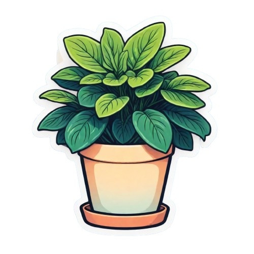

Know about me

| SCIENTIFIC NAME |
Peperomia Obtusifolia |
| COMMON NAME |
Peperomia |
| HEIGHT |
2 feet |
| WIDTH |
4-18 inches |
| LEAVES COLOR |
dark green almost purple |
| FLOWERS COLOR |
green |
Botanical Characteristics:
- Peperomia is a genus of small, compact tropical plants with over 1,000 known species.
- They typically have thick, fleshy leaves, making them semi-succulent and drought-tolerant.
- The leaves come in various shapes, textures, and colors—often waxy or patterned.
- They are non-toxic and belong to the Piperaceae family.
Varieties:
- Peperomia obtusifolia (Baby Rubber Plant): Known for its glossy green leaves.
- Peperomia argyreia (Watermelon Peperomia): Features leaves resembling watermelon rinds.
- Peperomia caperata (Ripple Peperomia): Characterized by deeply ridged, heart-shaped leaves.
- Peperomia prostrata (String of Turtles): A trailing type with turtle-shell patterned leaves.
Benefits:
- Acts as a natural air purifier, improving indoor air quality.
- Compact size makes it perfect for desks, shelves, and small spaces.
- Low maintenance and easy to propagate from leaf cuttings.Non-toxic to pets, making it a safe houseplant for pet owners.
Care Instructions:
- Light: Thrives in bright, indirect light but can tolerate low light.
- water: Allow soil to dry out between waterings; avoid overwatering.
- humidity: Prefers moderate to high humidity but adapts well to average home levels.
- soil: Use well-draining soil like a cactus or succulent mix.